Capítulo3 Visualizacion de datos
## [1] "2025-09-28"El tema proviene de los siguientes sitios.
English: https://r4ds.had.co.nz/data-visualisation.html
Español: https://es.r4ds.hadley.nz/03-visualize.html
3.1 Temas:
- Introducción
- paquete “tidyverse”
- datos de “mgp”
- ggplot2
- El concepto de la gramática de gráficos
3.1.3 Regresión lineal
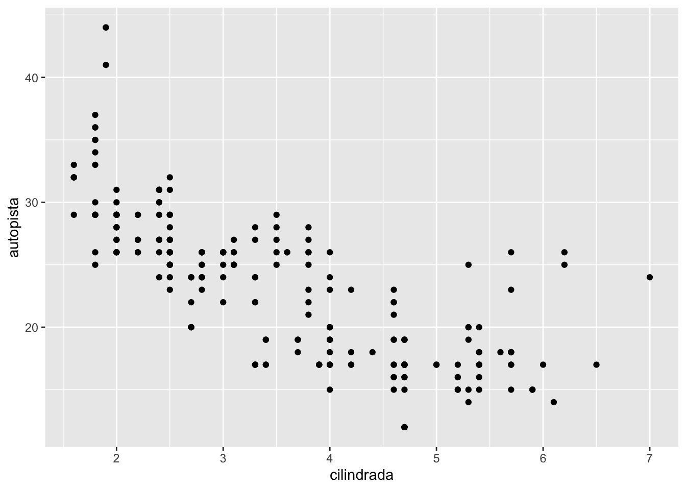
# derecha Linear Model
ggplot(data = millas) +
geom_smooth(method=lm,mapping = aes(x = cilindrada, y = autopista))+ # y = mx+b
geom_point(aes(x = cilindrada, y = autopista))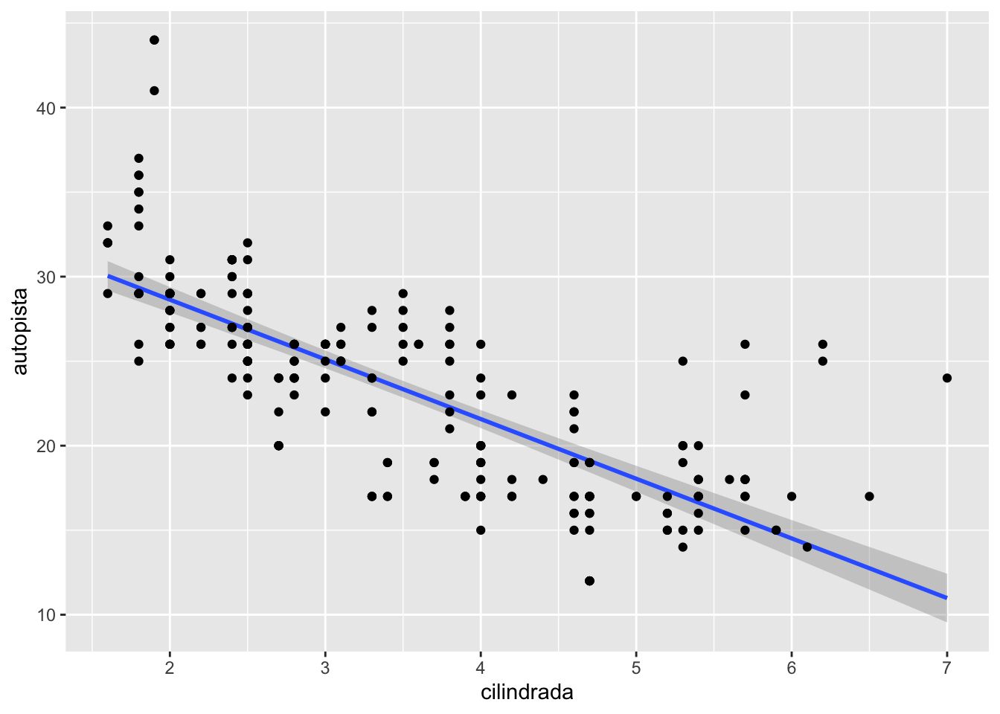
3.1.4 Regresión Loess
Vea este enlace para información sobre la regresión LOESS
<https://en.wikipedia.org/wiki/Local_regression>
ggplot(data = millas) +
geom_smooth(mapping = aes(x = cilindrada, y = autopista))+ # y = mx+b
geom_point(aes(x = cilindrada, y = autopista))
## [1] "fabricante" "modelo" "cilindrada" "anio" "cilindros"
## [6] "transmision" "traccion" "ciudad" "autopista" "combustible"
## [11] "clase"ggplot(data = millas) +
geom_smooth(aes(x = cilindrada, y = autopista))+
geom_point(aes(x = cilindrada, y = autopista))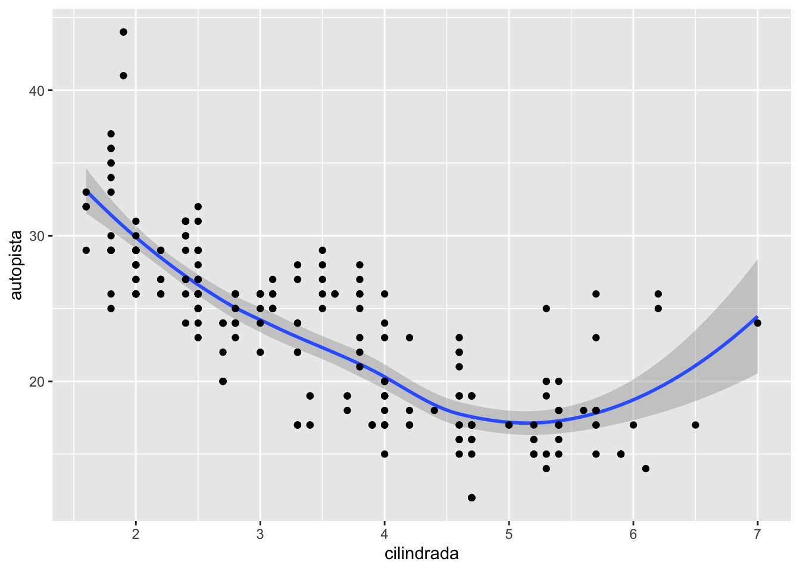
ggplot(data = millas) +
geom_smooth(aes(x = cilindrada, y = autopista, linetype = clase, colour=clase))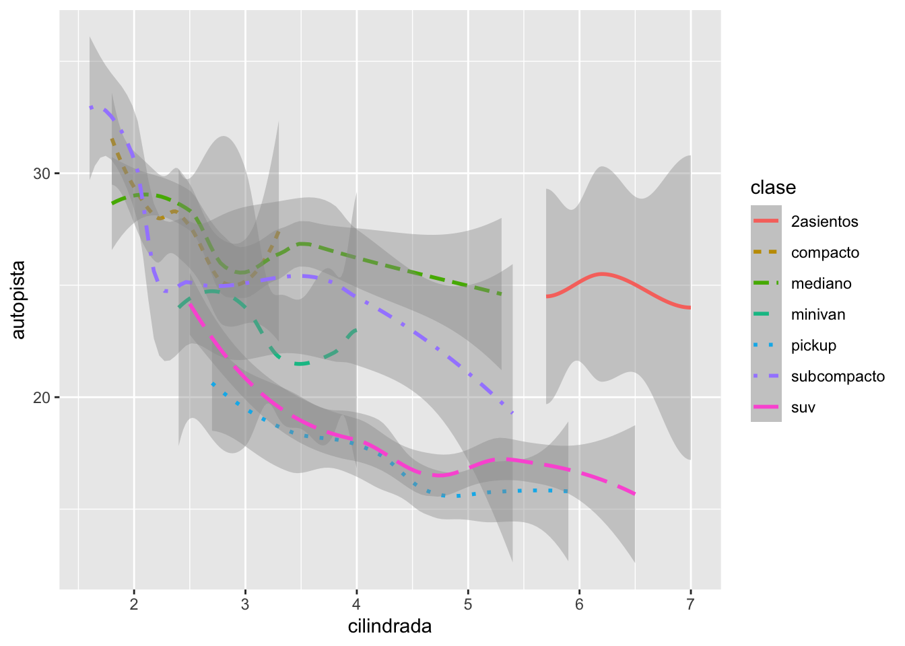
ggplot(data = millas) +
geom_smooth(method=lm, aes(x = cilindrada, y = autopista, linetype = clase, colour=clase))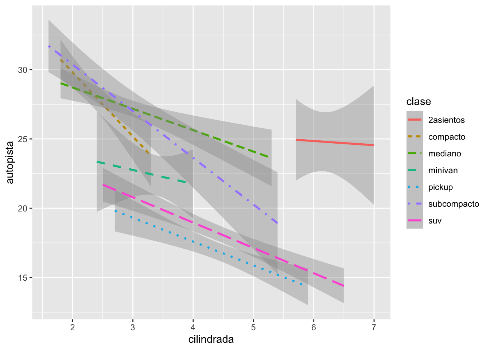
3.1.5 Regresión LOESS de un grupo
ggplot(millas,aes(x = cilindrada, y = autopista)) +
geom_point(aes(color = clase)) +
geom_smooth(data = filter(millas, clase == "suv"), se =TRUE)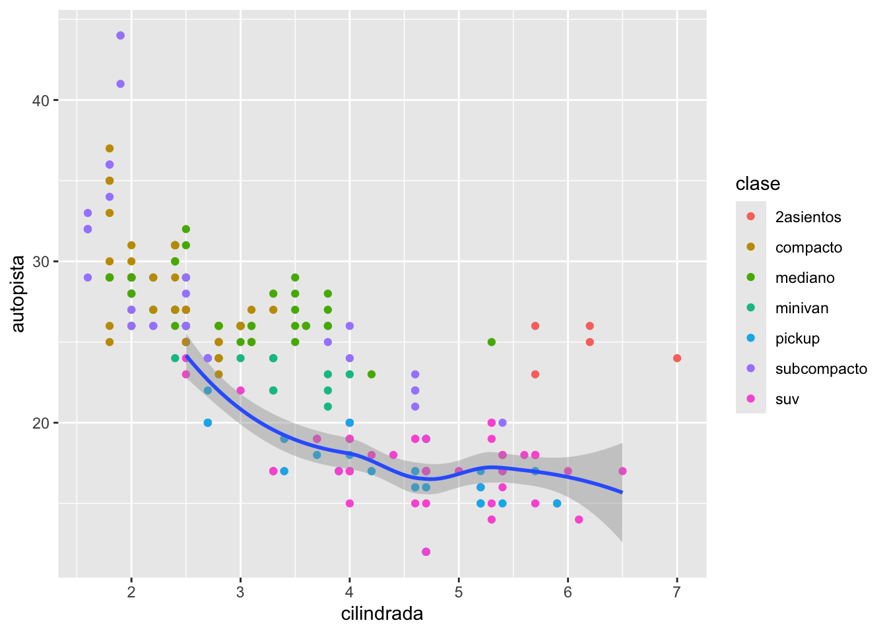
3.1.7 Regresión Lineal \[y=b+mx\]
ggplot(millas, mapping = aes(x = cilindrada, y = autopista)) +
geom_point(mapping = aes(color = clase)) +
geom_smooth(method=lm)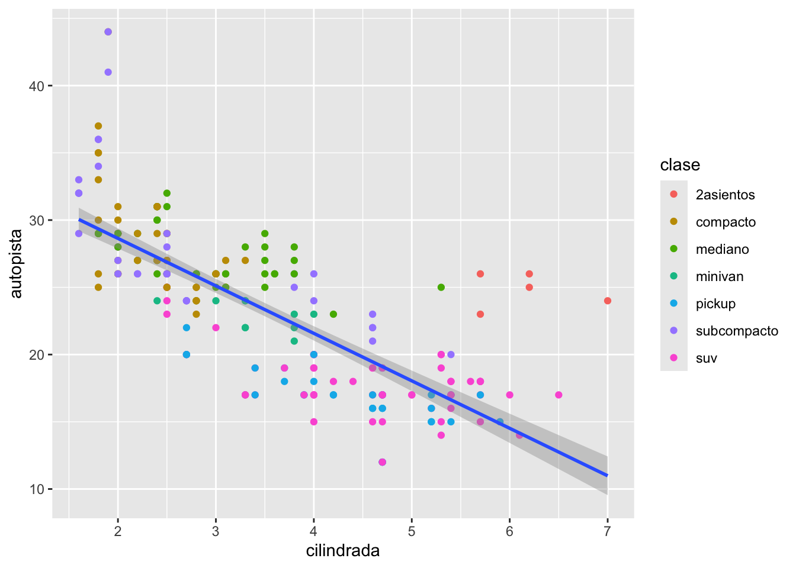
3.1.9 Puntos con intervalo mínimo y máximo
ggplot(diamantes) +
stat_summary(
mapping = aes(x = color, y = precio),
fun.min = min,
fun.max = max,
fun = median
)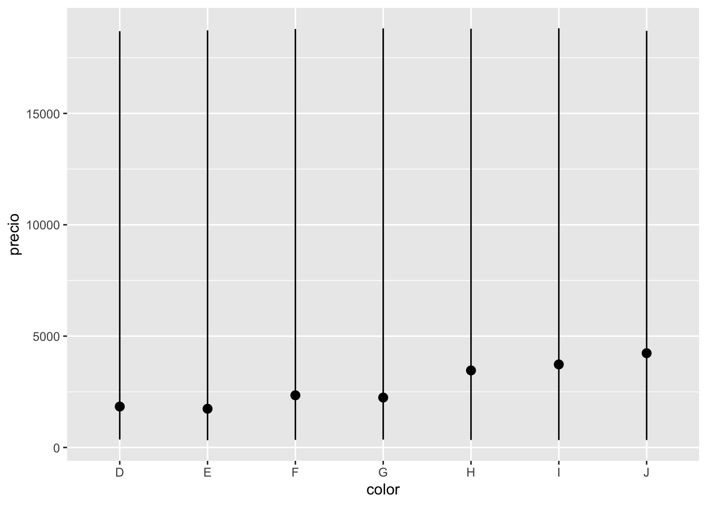
3.1.11 geom_bar y circular
bar <- ggplot(data = diamantes) +
geom_bar(aes(x = corte, fill = corte),
show.legend = FALSE,
width = 1
) +
theme(aspect.ratio = 1) +
labs(x = NULL, y = NULL)3.1.11.3 geom_bar & circular distribution
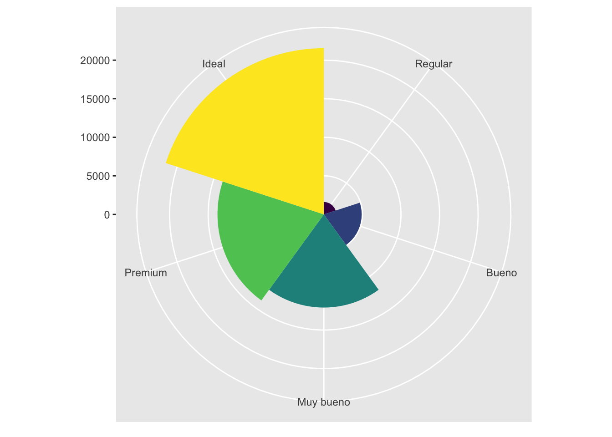
Donut Chart
library(ggplot2)
library(gridExtra)
data <- data.frame(
Category = c("A", "B", "C", "D"),
Value = c(20, 30, 40, 10)
)
pie_chart <- ggplot(data, aes(x = "", y = Value, fill = Category)) +
geom_bar(stat = "identity", width = 1) +
coord_polar(theta = "y") +
theme_void() +
labs(fill = "Category")
donut_chart <- pie_chart +
geom_bar(data = data, aes(x = "", y = Value), stat = "identity",
width = 0.5, fill = "white")+
theme_void()
donut_chart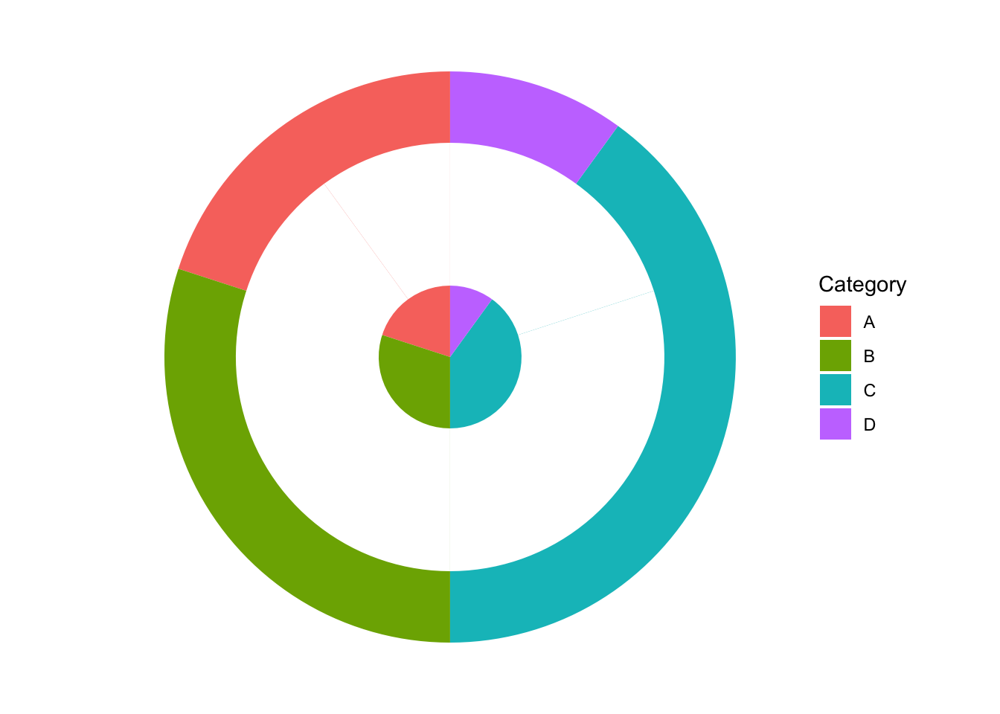
3.2 Leer datos de un archivo
- Ejercicios:
Hacer los ejercicios en la sección 3.2.4 del libro en español
- Aestética
- Ejercicios:
Hacer los ejercicios en la sección 3.3.1 del libro en español
- Problemas comunes
- Separar en facetas
- Ejercicios:
Hacer los ejercicios en la sección 3.5.1 del libro en español
- Objetos geométricos ***
- Ejercicios:
Hacer los ejercicios en la sección 3.6.1 del libro en español
- Transformación estadísticas
- Ejercicios:
Hacer los ejercicios en la sección 3.7.1 del libro en español
- Ajuste de posición
- Ejercicios:
Hacer los ejercicios en la sección 3.8.1 del libro en español
- Sistema de coordenadas
- Ejercicios:
Hacer los ejercicios en la sección 3.9.1 del libro en español
Ejercicio para entregar ( 6 puntos)
- Activa el paquete “ggversa”
- Activa el paquete “tidyverse”
- Utiliza los datos “PartosInfantes”. Leen la información sobre el archivo Son tres graficas que tendrán que someter
- Hacer un gráfico de puntos entre el número de muertes de infante y la cantidad de madres que mueren en el parto. (1 punto)
- Añadir al gráfico anterior un modelo lineal (linear model). Y Demostrando todos los datos con un color por region geografica, o sea añadir un color a los puntos por Grupo “region geográfica”. AM=America, EU= Union Europea, AF= Africa, O=Oceania, AS=Asia, Medio Oriente, (2 puntos)
- Enseña el modelo de regresion lineal solamente para AFRICA y ASIA (en la misma gráfica) (3 puntos)
Someter las tres gráficas en formato .jpeg o .png en el portal.
## NMI NMP GSPC Grupo Pais
## 1 8723 400 605.1878 AM Argentina
## 2 60 5 1720.1595 AM Bahamas
## 3 42 1 1146.0417 AM Barbados
## 4 121 2 278.5792 AM Belize
## 5 7756 540 208.7842 AM Bolivia
## 6 45682 1400 947.4277 AM BrazilHacer un grafico de puntos entre el numero de muertes por infante y la cantidad la cantidad de madres que mueren en el parto
Añadir al grafico anterior un modelo lineal (linear model)
Añadir un color a los puntos por grupo “region”. AM=America, EU= Union Europea, AF= Africa, O=Oceania, AS=Asia, Medio Oriente,
Demostrando todos los datos con un color por region geografica, enseña el modelo de regresion lineal solamente para AFRICA
3.3 Vea el siguiente gráfico
ggplot(data = millas) +
geom_point(mapping = aes(x = cilindrada, y = autopista)) +
facet_grid(traccion ~ cilindros)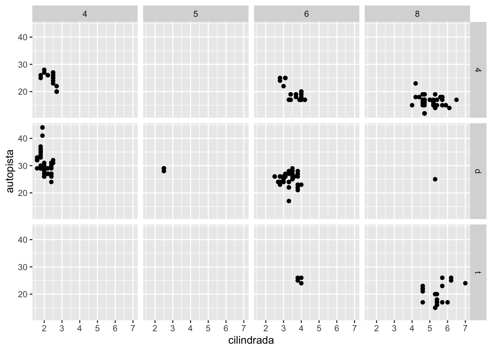
¿Por qué hay facetas que son vacias?
Explica que hace “.”? en estas funciones
ggplot(data = millas) +
geom_point(mapping = aes(x = cilindrada, y = autopista)) +
facet_grid(traccion ~ .)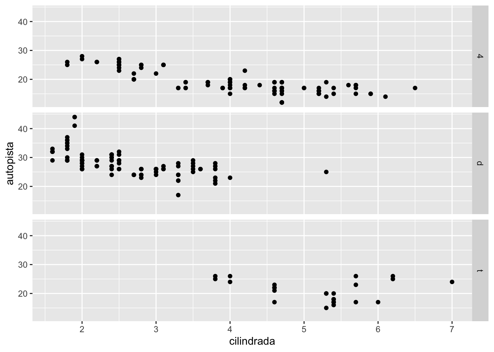
ggplot(data = millas) +
geom_point(mapping = aes(x = cilindrada, y = autopista)) +
facet_grid(. ~ cilindros)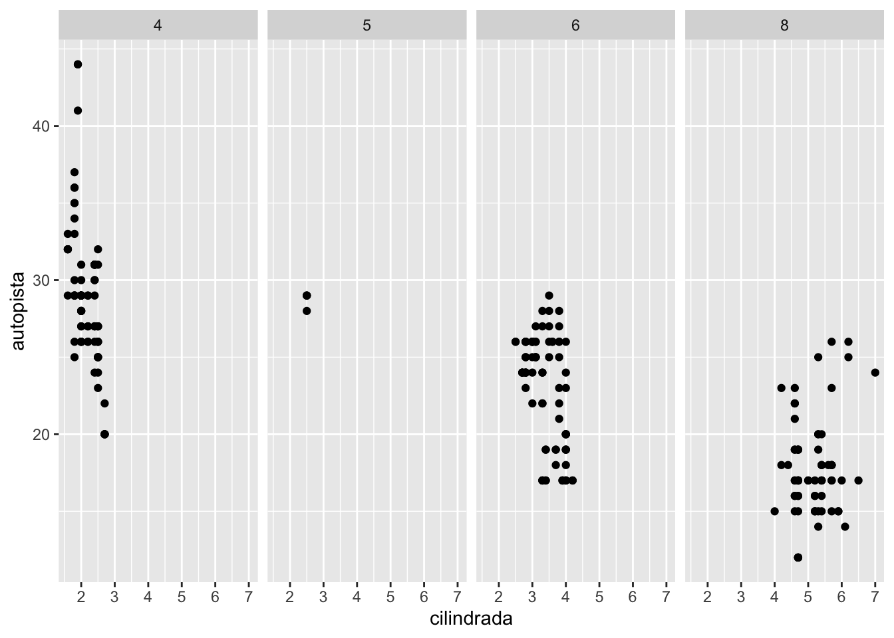
- Qué hace nrow en este código
ggplot(data = millas) +
geom_point(mapping = aes(x = cilindrada, y = autopista)) +
facet_wrap(~ clase, nrow = 2)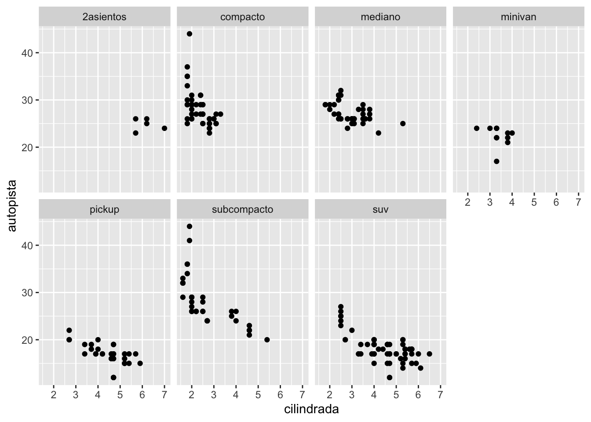